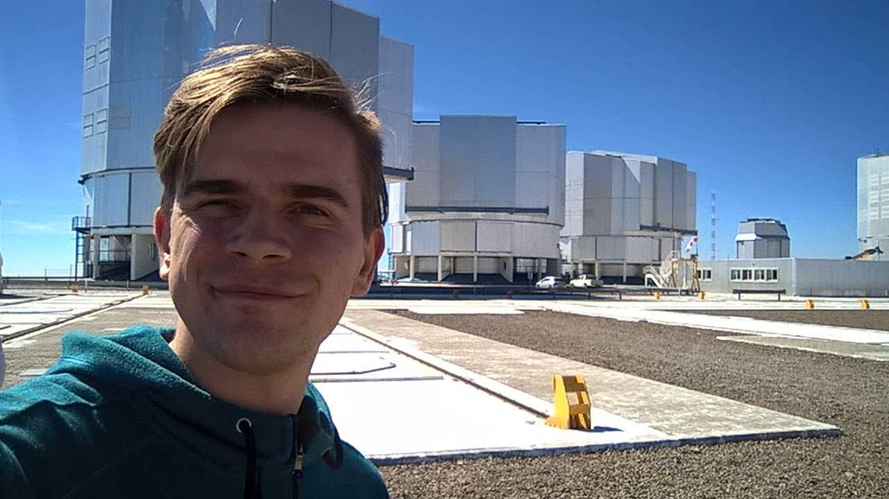

About Me
I am an observational astrophysicist specializing in the formation and early evolution of stars and planets. My research spans the worlds leading observatories, including ALMA, VLA, and JWST, and focuses on protostellar jets, protoplanetary disks, and planet formation. I pioneered studies measuring disk masses across protostellar evolution and demonstrated that planet formation begins early, linking star and exoplanet science. As a postdoctoral researcher, I expanded collaborations to model planetesimal formation and study disk accretion. I am also dedicated to mentoring, with experience as a conference organizer and project supervisor. My expertise places me at the intersection of star and planet formation, driving new discoveries with cutting-edge observatories.
Origin:Nowogard, Poland
Education & Career:
MSc Degree at Adam Mickiewicz University in Poznań, Poland (2016)
PhD at Leiden University in Netherlands (2016-2020)
ESO Fellow, Garching, Germany (2020-2023)
Postdoctoral Researcher, Leiden Observatory, Netherlands (2023 - present)
Research Interests:
star and planet formation, protostellar jets, protoplanetary
disks, early planet formation, submillimeter interferometry
Publications:
Link to ADS